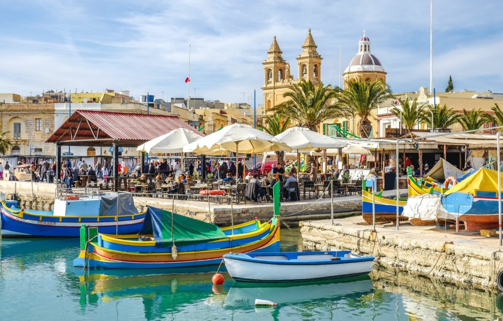
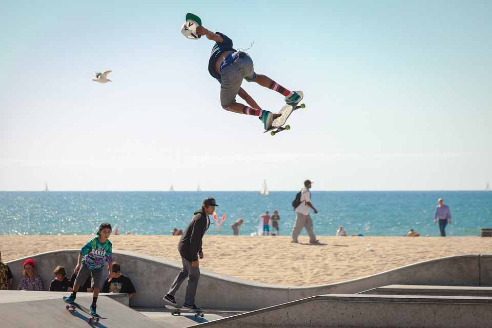

Turystyka

Jazda na desce
Biznes
Nauka angielskiego
Okres letni trwa na wyspie Malta aż 8 miesięcy. Nie zaskoczą nas ani wichury, ani gwałtowne opady deszczu czy niskie temperatury.
Turystyka
Jazda na desce
Biznes
Nauka angielskiego
“Podróże to jedyna rzecz na którą wydajemy pieniądze, a stajemy się bogatsi.”
– autor nieznany